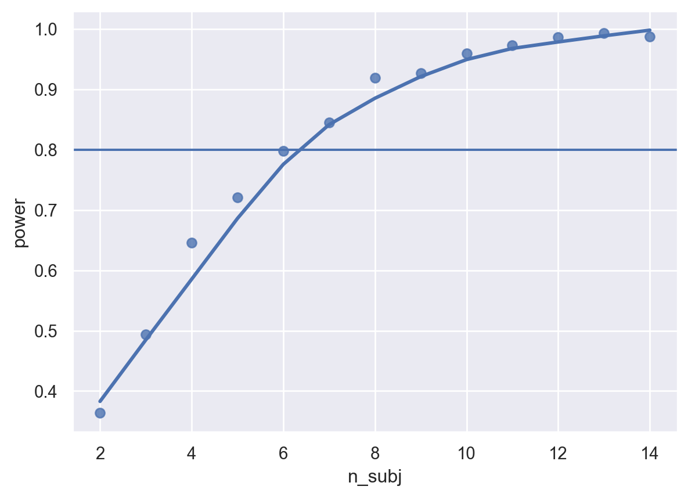

import numpy as np
import pandas as pd
import seaborn as sns
import seaborn.objects as so
import statsmodels.api as sm
import statsmodels.formula.api as smf
import itertools
import glob, os, warnings
from sklearn.model_selection import ParameterGridPower Simulation in a Mixed Effects design using Python
In this notebook we’ll go through a quick example of setting up a power analysis, using data from an existing, highly-powered study to make credible parameter estimates. The code for setting up a simulation is inspired by/shamelessly stolen from a great tutorial about this topic by Lisa DeBruine and her appendix on its application for sensitivity analysis
Before we do anything, let’s import all the packages we will need:
In this example, we will make an estimate of the number of participants we need to replicate a simple and well-established experimental finding: The capture of attention by a colour singleton during visual search for a unique shape singleton. For this example, we are fortunate in that there are many studies of this effect for us to base our parameter estimates on. One recent example is a highly-powered study from the Serences lab purpose-built to be used for sensitivity analysis. First let’s import the data for our specific case from the Adam et al. (2021) study, which is freely available in an OSF repository, and look at the data.
Note that when previous data doesn’t exist (or even if it does, but you don’t trust that it’s sufficient to base your effect estimates on) there are alternative ways of determining such parameters, including formally determining a smallest effect size of interest.
The data we chose is from experiment 1c: variable colour singleton search. We are interested in the raw trial data, not the summary data (We are doing a mixed model after all, not an ANOVA) so we have to grab all the raw files and concatenate them.
path = os.path.join(os.getcwd(),"Experiment_1c")
all_files = glob.glob(os.path.join(path, "*.csv"))
df = pd.concat((pd.read_csv(f) for f in all_files), ignore_index=True)Once it’s imported, we can take a look at our data, e.g., looking at subject means between the two conditions:
d = (df
.query("acc==1 & set_size==4")
.assign(rt = lambda x: x.rt * 1000))
sns.set_theme()
sns.catplot(
data=d,
x="distractor",
y="rt",
hue="subject",
kind="point"
)<seaborn.axisgrid.FacetGrid at 0x2b60098a848>
We can clearly see typical atttentional capture effects in the data. Now that we have the data, let’s model it:
d = (df
.query("acc==1 & set_size==4")
.assign(rt = lambda x: x.rt * 1000))
# Our model is simple: RT is dependent on distractor presence, with a random slope and intercept for each subject. More complex models are left as an exercise to the reader.
md = smf.mixedlm("rt ~ distractor", d, groups=d['subject'],re_formula="~distractor")
mdf = md.fit()
mdf.summary()| Model: | MixedLM | Dependent Variable: | rt |
| No. Observations: | 9164 | Method: | REML |
| No. Groups: | 24 | Scale: | 30910.5844 |
| Min. group size: | 353 | Log-Likelihood: | -60427.4618 |
| Max. group size: | 395 | Converged: | Yes |
| Mean group size: | 381.8 |
| Coef. | Std.Err. | z | P>|z| | [0.025 | 0.975] | |
|---|---|---|---|---|---|---|
| Intercept | 651.500 | 16.663 | 39.098 | 0.000 | 618.841 | 684.159 |
| distractor[T.present] | 30.857 | 4.753 | 6.493 | 0.000 | 21.542 | 40.171 |
| Group Var | 6501.876 | 11.192 | ||||
| Group x distractor[T.present] Cov | 416.478 | 2.281 | ||||
| distractor[T.present] Var | 218.053 | 0.912 |
The above model rt ~ distractor + ( distractor | subject) is our putative data generating process, the parameters that we believe underly the generation of observed dependent variables, and the relationship between those parameters. The table shown above gives us parameter estimates for all fixed and random effects in the model. Now let’s plug those parameters into a simulation!
n_subj = 10 # number of subjects
n_present = 200 # number of distractor present trials
n_absent = 200 # number of distractor absent
beta_0 = 650 # grand mean
beta_1 = 30 # effect of category
tau_0 = 80 # by-subject random intercept sd
tau_1 = 15 # by-subject random slope sd
rho = 0.35 # correlation between intercept and slope
sigma = 175 # residual noseGenerate trials with their fixed effects:
# simulate a sample of items
# total number of items = n_ingroup + n_outgroup
items = (pd
.DataFrame({
'item_id': range(n_absent+n_present),
'category' : np.repeat(['absent', 'present'], [n_absent, n_present])})
.assign(X_i=lambda x: np.where(x["category"] == 'present', 0.5, -0.5)))
items.describe()| item_id | X_i | |
|---|---|---|
| count | 400.000000 | 400.000000 |
| mean | 199.500000 | 0.000000 |
| std | 115.614301 | 0.500626 |
| min | 0.000000 | -0.500000 |
| 25% | 99.750000 | -0.500000 |
| 50% | 199.500000 | 0.000000 |
| 75% | 299.250000 | 0.500000 |
| max | 399.000000 | 0.500000 |
And generate participants with their random intercepts and slopes:
# simulate a sample of subjects
# calculate random intercept / random slope covariance
covar = rho * tau_0 * tau_1
# put values into variance-covariance matrix
cov_mx = np.array([
[tau_0**2, covar],
[covar, tau_1**2]
])
# generate the by-subject random effects
subject_rfx = np.random.multivariate_normal(mean = [0, 0], cov = cov_mx, size = n_subj)
# combine with subject IDs
subjects = pd.DataFrame({
'subj_id': range(n_subj),
'T_0s': subject_rfx[:,0],
'T_1s': subject_rfx[:,1]
})
subjects.describe()| subj_id | T_0s | T_1s | |
|---|---|---|---|
| count | 10.00000 | 10.000000 | 10.000000 |
| mean | 4.50000 | -2.497345 | -1.046334 |
| std | 3.02765 | 89.723248 | 10.882602 |
| min | 0.00000 | -151.672503 | -15.647540 |
| 25% | 2.25000 | -70.234383 | -8.316924 |
| 50% | 4.50000 | 2.051978 | -3.066226 |
| 75% | 6.75000 | 59.164272 | 6.633961 |
| max | 9.00000 | 134.285709 | 16.773892 |
Now combine and add residual noise to create a complete dataframe:
#cross items and subjects, add noise
items['key'] = 1
subjects['key'] = 1
trials = (pd
.merge(items,subjects, on='key')
.drop("key",axis=1)
.assign(e_si = lambda x: np.random.normal(scale=sigma,size=len(x))))
# calculate the response variable
dat_sim = (trials
.assign(RT = lambda x: beta_0 + x.T_0s + (beta_1 + x.T_1s) * x.X_i + x.e_si)
.filter(items=['subj_id', 'item_id', 'category', 'X_i', 'RT']))
dat_sim.head(10)| subj_id | item_id | category | X_i | RT | |
|---|---|---|---|---|---|
| 0 | 0 | 0 | absent | -0.5 | 1118.192710 |
| 1 | 1 | 0 | absent | -0.5 | 503.719855 |
| 2 | 2 | 0 | absent | -0.5 | 729.969596 |
| 3 | 3 | 0 | absent | -0.5 | 721.213689 |
| 4 | 4 | 0 | absent | -0.5 | 855.900025 |
| 5 | 5 | 0 | absent | -0.5 | 585.110953 |
| 6 | 6 | 0 | absent | -0.5 | 569.520883 |
| 7 | 7 | 0 | absent | -0.5 | 602.883967 |
| 8 | 8 | 0 | absent | -0.5 | 781.277511 |
| 9 | 9 | 0 | absent | -0.5 | 685.759079 |
Data generated! Does it look like we’d expect?
sns.catplot(
data=dat_sim,
x="category",
y="RT",
hue="subj_id",
kind="point"
)<seaborn.axisgrid.FacetGrid at 0x2b6034c7148>
Looks comparable to the original data! Now let’s fit a model to see if we recover the parameters:
md = smf.mixedlm("RT ~ category", dat_sim, groups=dat_sim['subj_id'], re_formula="~category")
mdf = md.fit()
mdf.summary()| Model: | MixedLM | Dependent Variable: | RT |
| No. Observations: | 4000 | Method: | REML |
| No. Groups: | 10 | Scale: | 30242.2997 |
| Min. group size: | 400 | Log-Likelihood: | -26328.8800 |
| Max. group size: | 400 | Converged: | Yes |
| Mean group size: | 400.0 |
| Coef. | Std.Err. | z | P>|z| | [0.025 | 0.975] | |
|---|---|---|---|---|---|---|
| Intercept | 635.906 | 25.972 | 24.484 | 0.000 | 585.002 | 686.811 |
| category[T.present] | 27.370 | 9.190 | 2.978 | 0.003 | 9.358 | 45.382 |
| Group Var | 6594.342 | 18.316 | ||||
| Group x category[T.present] Cov | 576.521 | 4.648 | ||||
| category[T.present] Var | 542.108 | 2.291 |
Great, our simulation works - our fixed effect parameter estimates are close to the originals, and statistically significant! Now for a power analysis, we’d put the above in functions and run the code many times for a given combination of parameters. See below:
def my_sim_data(
n_subj = 5, # number of subjects
n_present = 200, # number of distractor present trials
n_absent = 200, # number of distractor absent
beta_0 = 650, # grand mean
beta_1 = 30, # effect of category
tau_0 = 80, # by-subject random intercept sd
tau_1 = 15, # by-subject random slope sd
rho = 0.35, # correlation between intercept and slope
sigma = 175
):
# simulate a sample of items
# total number of items = n_ingroup + n_outgroup
items = (pd.DataFrame({
'item_id': range(n_absent+n_present),
'category' : np.repeat(['absent', 'present'], [n_absent, n_present])
})
.assign(X_i=lambda x: np.where(x["category"] == 'present', 0.5, -0.5)))
# simulate a sample of subjects
# calculate random intercept / random slope covariance
covar = rho * tau_0 * tau_1
# put values into variance-covariance matrix
cov_mx = np.array([
[tau_0**2, covar],
[covar, tau_1**2]
])
# generate the by-subject random effects
subject_rfx = np.random.multivariate_normal(mean = [0, 0], cov = cov_mx, size = n_subj)
# combine with subject IDs
subjects = pd.DataFrame({
'subj_id': range(n_subj),
'T_0s': subject_rfx[:,0],
'T_1s': subject_rfx[:,1]
})
#cross items and subjects, add noise
items['key'] = 1
subjects['key'] = 1
trials = (pd
.merge(items,subjects, on='key').drop("key",axis=1)
.assign(e_si = lambda x: np.random.normal(scale=sigma,size=len(x))))
# calculate the response variable
dat_sim = (trials
.assign(RT = lambda x: beta_0 + x.T_0s + (beta_1 + x.T_1s) * x.X_i + x.e_si)
.filter(items=['subj_id', 'item_id', 'category', 'X_i', 'RT']))
return dat_simThe above function simulates data. The function below combines it with a model fit so we have a function that can be repeatedly called during our power analysis.
def single_run(filename = None, *args, **kwargs):
dat_sim = my_sim_data(*args, **kwargs)
with warnings.catch_warnings(record=True) as w:
warnings.simplefilter("ignore")
md = smf.mixedlm("RT ~ category", dat_sim, groups=dat_sim['subj_id'], re_formula="~category")
mod_sim = md.fit()
sim_results = (mod_sim
.summary()
.tables[1]
.assign(**kwargs))
sim_results = sim_results.apply(pd.to_numeric, errors='coerce')
sim_results.index.rename('i',inplace=True)
if not filename == None:
hdr = not os.path.isfile(filename)
sim_results.to_csv(filename, mode='a',header=hdr)
return sim_resultsNow let’s run our sensitivity analysis - we will run our simulation many times (100 times here for speed, but aim for more, like 1000+) for each combination of parameters, and record how often the fixed effect estimates reach significance:
nreps = 100
params = ParameterGrid({
'n_subj' : [5], # number of subjects
'n_present' : [150], # number of distractor present trials
'n_absent' : [150], # number of distractor absent
'beta_0' : [650], # grand mean
'beta_1' : [30], # effect of category
'tau_0' : [80], # by-subject random intercept sd
'tau_1' : [15], # by-subject random slope sd
'rho' : [0.35], # correlation between intercept and slope
'sigma' : [175] # residual (standard deviation)
})
sims = pd.concat([single_run(**param) for param in params for i in range(nreps)])
alpha = 0.05
(sims
.assign(power = sims['P>|z|'] < alpha)
.query('i=="Intercept" or i=="category[T.present]"')
.groupby(['i'])
.agg(
mean_estimate = ('Coef.','mean'),
mean_se = ('Coef.', 'sem'),
power = ('power', 'mean')))| mean_estimate | mean_se | power | |
|---|---|---|---|
| i | |||
| Intercept | 636.72503 | 3.395011 | 1.00 |
| category[T.present] | 30.56743 | 1.032972 | 0.72 |
If we want to run our sensitivity analysis across a given parameter space, we’ll have to map the function single_run to generate data across this space, for example, over a varying number of participants:
filename1 = "sens_py.csv"
nreps = 100
params = ParameterGrid({
'n_subj' : range(2,10), # number of subjects
'n_present' : [150], # number of distractor present trials
'n_absent' : [150], # number of distractor absent
'beta_0' : [650], # grand mean
'beta_1' : [30], # effect of category
'tau_0' : [80], # by-subject random intercept sd
'tau_1' : [15], # by-subject random slope sd
'rho' : [0.35], # correlation between intercept and slope
'sigma' : [175] # residual (standard deviation)
})
if not os.path.isfile(filename1):
# run a simulation for each row of params
# and save to a file on each rep
sims1 = pd.concat([single_run(**param, filename=filename1) for param in params for i in range(nreps)])Note that the above could obviously also be run over other dimensions of our parameter space, e.g. for different estimates of the fixed effects, amount of noise, number of trials, etc. etc., by changing the params list. How did we do? Let’s take a look at our power curve.
sims1 = pd.read_csv('sens_py.csv')
power1 = (sims1.assign(power = sims1['P>|z|'] < alpha)
.query('i=="category[T.present]"')\
.groupby(['n_subj'])\
.agg(
mean_estimate = ('Coef.','mean'),
mean_se = ('Coef.', 'sem'),
power = ('power', 'mean')))sns.regplot(x=power1.index, y=power1["power"],lowess=True)<AxesSubplot:xlabel='n_subj', ylabel='power'>
Our power analysis suggests that, with the parameters established above, we need ~8 or more participants to reliably detect an effect!
The code used above is specific to power analysis for mixed models, but the approach generalises to other methods too, of course! The above code can easily be wrangled to handle different model types (simply change the model definition in single_run and make sure to capture the right parameters), and even Bayesian approaches. (For a thorough example of doing power analysis with Bayesian methods and the awesome bayesian regression package brms, see this blog post).
Even if the above code is spaghetti to you (Perhaps you prefer R?), I hope you will take away a few things from this tutorial:
- Power analysis is nothing more than testing whether we can recover the parameters of a hypothesised data-generating process reliably using our statistical test of choice.
- We can determine the parameters for such a data-generating process in the same way we formulate hypotheses (and indeed, in some ways these two things are one and the same): we use our knowledge, intuition, and previous work to inform our decision-making.
- If you have a hypothetical data-generating process, you can simulate data by simply formalising that process as code and letting it simulate a dataset
- Simulation can help you answer questions about your statistical approach that are difficult to answer with other tools